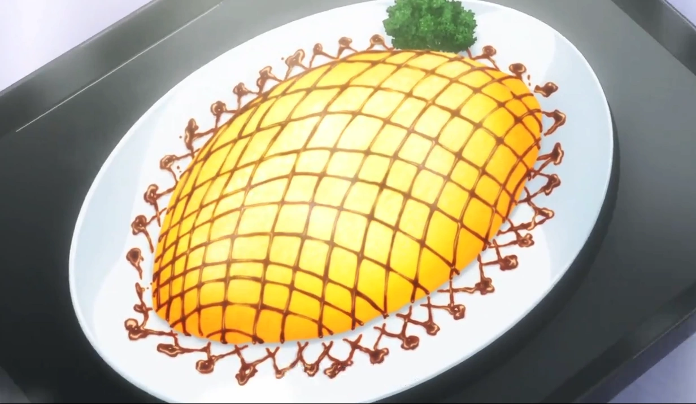

Curry Risotto Omurice

"The unseen blade is the deadliest!
Ingredients
- 1 cup rice, uncooked (I recommend using Nishiki sushi rice)
- 0.5 lb ground meat (we used ground chicken)
- 0.5 sweet onion, diced
- 1/5 block of S&B Golden Curry Roux
- 1 tbspmango chutney
- 3-4 cups of water
- 2 tsp minced ginger
- 1 block of chicken bouillon (or packet if you have powdered)
- 2 tsp parsley
- 1/4 cup mozzarella shreds
- 1 tsp salt & pepper
Instructions
- In a large pot, add diced onions and ginger. Saute, then add the meat and curry powder. Cook until meat is done.
- Add the rice, water, mango chutney, and chicken bouillon to the pot (start with 3 cups of water, and add the fourth if necessary). Stir then heat to boiling, then reduce to low heat and let simmer until liquid is absorbed and rice is cooked.
- Add cheese, salt & pepper, and parsley and mix. Set aside.
- Crack 2 eggs into a small bowl and beat. Season with salt and pepper.
- With the largest pan you have, add some cooking spray and then the egg mix. Let it spread thin. Once it is mostly (but not entirely) cooked, add desired mixture to the center in a cylinder shape. Gently fold the egg over the tops and then use the pan to help shape your omurice.
- Use a plate to flip the omurice onto it so its ready to serve. Continue to mold into the oval-like shape as needed.
- Repeat this process with the eggs until you have 4-6 servings.
- In the pan you used to make the omurice, add all of the sauce ingredients. Heat to boiling to thicken and then remove from heat. Drizzle over your omurice and enjoy!